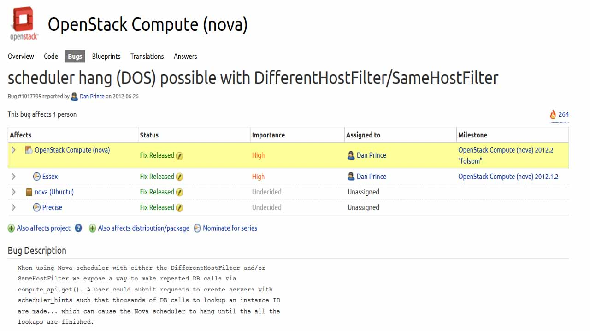
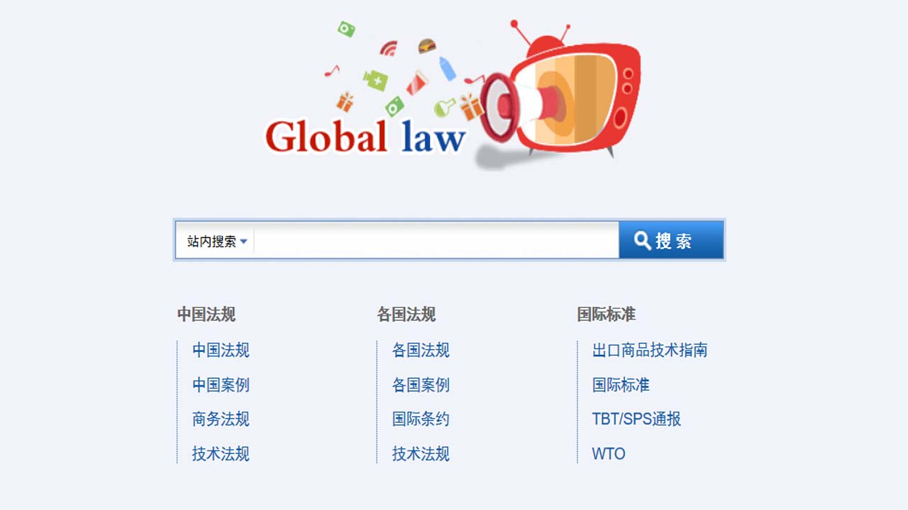

-
paper,paper,paper
-
之前在做nova组件中nova scheduler服务的分析,目前在导师的实验室做云环境中虚拟机迁移方面的研究,当前的主要任务是看论文，做实验，找问题，解决问题。
-
云
Try it
-
Internship in VMWare
-
参与了VIO（VSphere Intergation OpenStack）项目
自行搭建VCloud环境并对VCloud提供的API进行研究
参与了OpenStack社区中senlin项目的开发，负责placement policy模块的开发
-
V
VMWare
-
Reproduce

-
该漏洞存在于2012.02版本以前的nova代码中，恶意用户可以通过该漏洞实现DOS攻击，造成nova scheduler服务的瘫痪
通过对漏洞进行重现，定位缺陷代码的位置，提出解决方案
-
DOS
Link
-
Mechine Learning
- 研一下有幸选上了王厚峰老师的机器学习课程，对机器学习来了次亲密接触
- 用SVM，bayes以及KNN三种分类算法实现了对用户评价的情感分类
- 基于LSI主题模型与凝聚聚类算法实现了Weps人名消歧，最终F值达到了0.8326
- 基于CRF(条件随机场)的命名实体识别
-
分
聚
-
H264编解码
- 在课程大作业中和同学们一起开发了一个在线课堂系统，负责视频流编解码部分，主要任务是在服务器端对视频流进行编解码，并对视频画面合并技术进行了探索。
-
H264
View
-
PKU
-
经过差不多一年的考研生涯，最终如愿以偿的考入北京大学软件与微电子学院。从此，我在北京的精彩生活就开始了……
-
BJ
PKU
Link
-
Development

- 在万方法规部参与全球法律法规网的二次开发,这是一个典型SSH架构的WEB项目
- 由于网站后台数据库进行了重构，我主要负责服务器端数据库接口的适配
- 另外还对开发过程中发现的bug进行了修复
-
SSH
View
-
CSU

- 在18岁那年，有幸考上了中南大学，成为了软件学院的一名学生
- 在大学度过了四年的快乐时光，玩的很开心，期间搞了搞学习，完成了几个小项目
-
CSU
Link
{% if site.duoshuo_username %}
-
{% endif %}
{% if site.duoshuo_username %}
{% endif %}